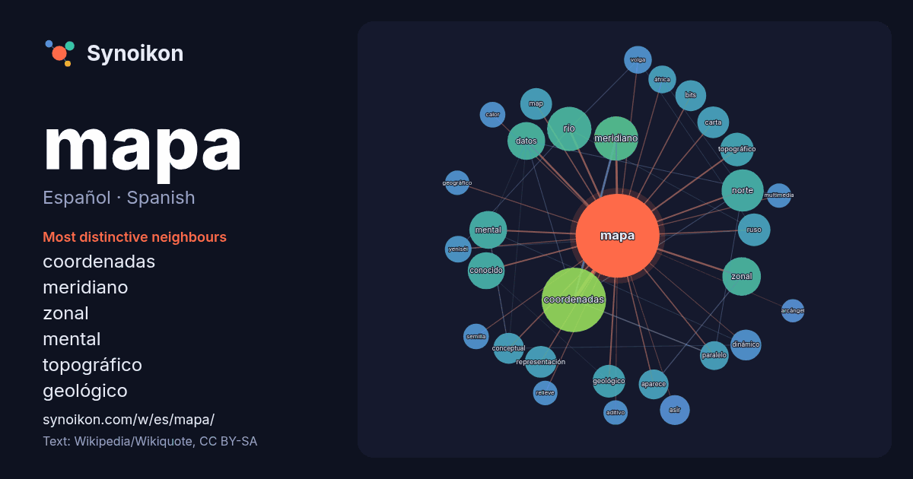

Español · Spanish · word of the day list
mapa
“map” · The words found around it in 1152 instances from Spanish Wikipedia, Wikiquote.

Most distinctive neighbours
- coordenadas 51×
- meridiano 33×
- zonal 26×
- mental 22×
- topográfico 20×
- geológico 18×
- map 18×
- dinámico 16×
- conceptual 16×
- bits 16×
- asir 16×
- datos 15×
- ruso 15×
- representación 14×
- volga 14×
- paralelo 14×
- yeniséi 13×
- carta 12×
- aditivo 11×
- calor 11×
× = how many times more often than in general Spanish Wikipedia text.
Most frequent neighbours
- coordenadas 70
- meridiano 33
- río 33
- norte 30
- zonal 25
- datos 24
- mental 24
- conocido 23
- mundo 19
- topográfico 19
- geológico 18
- ruso 18
- carta 17
- isla 17
- map 17
- representación 17
- sur 17
- bits 16
- conceptual 16
- dinámico 16
In context
- Un mapa es una representación gráfica simplificada de un territorio con propiedades métricas sobre una superficie bidimensional que puede ser con forma Wikipedia snippets · Mapa
- MAPA o Monitorización Ambulatoria de la Presión Arterial es una prueba diagnóstica que registra las presiones arteriales del paciente durante un largo Wikipedia snippets · Monitorización Ambulatoria de la Presión Arterial
- Por mapa de T en O, o mapa Orbis Terrarum, se conoce a un tipo de mapamundi, realizado en la Edad Media, caracterizado por su alta carga teológica. Las Wikipedia snippets · Mapa de T en O
- Mapa interactivo es aquella representación cartográfica desarrollada en entornos computacionales que aúna el mapa con la capacidad de interactividad sobre Wikipedia snippets · Mapa interactivo
- El Mapa Topográfico Nacional es un conjunto de publicaciones cartográficas producidas por el Instituto Geográfico Nacional (IGN) de España. Está compuesto Wikipedia snippets · Mapa Topográfico Nacional
- Un mapa coroplético (del griego χῶρος "área/región" y πλῆθος "multitud"), mapa coropleto o mapa de coropletas, es un tipo de mapa temático en el que las Wikipedia snippets · Mapa coroplético
- Un mapa topográfico (también llamado físico) es una imagen, generalmente del relieve de la superficie terrestre, a una escala definida. A diferencia de Wikipedia snippets · Mapa topográfico
- Un mapa de Karnaugh (también conocido como tabla de Karnaugh o diagrama de Veitch, abreviado como Mapa-K o Mapa-KV) es un diagrama utilizado para la simplificación Wikipedia snippets · Mapa de Karnaugh
More Spanish words
- agua
- arte
- bosque
- caballo
- camino
- campana
- canción
- ciencia
- ciudad
- clima
- comida
- corazón
- desierto
- dinero
- dios
- espejo
- estrella
- familia
- fuerza
- gato
- historia
- invierno
- isla
- jardín
- lengua
- lluvia
- madre
- miel
- montaña
- muerte
- naturaleza
- oro
- otoño
- pan
- perro
- puente
- reloj
- sal
- salud
- silencio
- sombra
- tiempo
- tormenta
- trabajo
- tren
- té
- verano
- verdad
- vida
Precomputed on 2026-10-09 with default settings (±5 words, medium corpus). The interactive map can refresh it with live data.